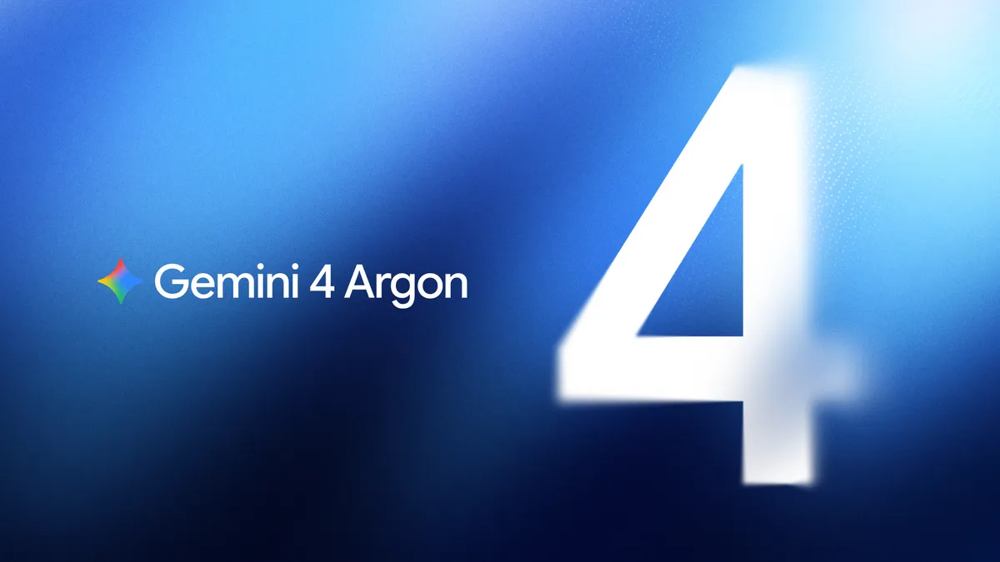

AI NEWS ISSUE 04
더 오래 일하는 AI,
더 중요해진 검증과 책임
Gemini 4 Argon, 추론 추출 공격, 생물학 워터마크, 그리고 FTC 조사.
AI의 능력이 커질수록 함께 중요해지는 과정·출처·책임을 살펴봅니다.
AT A GLANCE
30초 요약
- 실행 Gemini 4 Argon은 긴 작업을 이어가기 위해 출력 토큰 한도를 100만 개로 늘렸습니다.
- 보호 OpenAI는 모델과의 대화를 조작해 보호된 추론을 추출하려 한 활동을 공개했습니다.
- 출처 SynthID Bio는 AI가 만든 단백질 서열·구조에 식별 신호를 남기는 초기 연구입니다.
- 책임 FTC의 AI 위험 조사가 보도됐습니다. 조사 자체가 위법 확정을 뜻하지는 않습니다.
9월 30일 발표·보도를 10월 2일 기준으로 확인했습니다. 기업 발표, 연구 결과, 언론 보도와 헬로우 휴먼의 해석을 구분합니다. Google·DeepMind 공식 자료와 AI 생성 표지는 각 캡션에 표시했으며, 도식과 업무 예시는 이해를 돕기 위해 구성했습니다.
AI가 큰 코드베이스를 고치고, 새로운 단백질을 설계하고, 외부 도구로 실제 작업까지 수행합니다. 서로 다른 분야의 소식처럼 보이지만 한 가지 질문으로 이어집니다. “그 결과가 어떤 과정을 거쳐 나왔는지 다시 확인할 수 있을까?”
이번 호는 더 오래 일하는 능력과, 그 능력을 믿고 맡기기 위해 필요한 증거를 함께 읽습니다.
01 / GEMINI 4 ARGON
한 번 잘 답하는 AI에서,
긴 작업을 이어가는 AI로
Google은 9월 30일 Gemini 4 Argon을 공개했습니다. 여러 파일을 읽고 코드를 고치거나, 자료를 비교해 조사하는 것처럼 단계가 많은 업무를 겨냥한 모델입니다. Google 공식 발표 · 한국어 ↗

눈에 띄는 변화는 최대 출력 토큰 100만 개입니다. 토큰은 모델이 글과 코드를 처리하는 조각입니다. 이 숫자는 한 번에 읽을 자료의 양이 아니라, 한 실행 흐름에서 생성할 수 있는 양의 한도를 뜻합니다. 실제로 매번 100만 개를 쓰거나, 그만큼 일이 정확해진다는 보장은 아닙니다.
긴 작업에는 답변 이후의 과정이 있습니다
- 읽기코드 분석
관련 파일과 원인을 찾습니다.
- 만들기수정안 작성
필요한 변경을 적용합니다.
- 확인하기테스트 실행
실패하면 다시 고칩니다.
- 검토하기결과와 근거
사람이 변경과 검증 기록을 봅니다.
Google은 내부 활용 사례로 데이터센터 메모리 300TiB 이상 절감과 대규모 C/C++ 코드의 Rust 이전 작업을 소개했습니다. Fuchsia의 Zircon 커널은 80만 줄 이상 규모가 대상입니다. 이전 작업은 검토·테스트를 거치는 중이며, 이 숫자를 모두 이전·배포를 마쳤다는 뜻으로 읽으면 안 됩니다.
실제 소프트웨어 개발 과제를 평가하는 DeepSWE v1.1에서는 77.9%를 발표했습니다. 내부 적용 사례와 점수는 Google이 공개한 결과입니다. 모든 개발 업무에서 가장 뛰어나다는 의미는 아니며, 우리 코드에서도 같은 효과가 나는지는 따로 검증해야 합니다.
초기 가격과 이후 가격을 구분하세요
| 적용 시기 | 입력 | 출력 |
|---|---|---|
| 출시 초기 | $2 | $10 |
| 초기 기간 이후 | $4 | $20 |
접근 범위도 제한적입니다. 발표 기준으로 Fairwind 프로그램의 신뢰할 수 있는 사이버 보안 전문가에게 우선 제공하며, 이후 유료 API 고객과 Google AI Ultra 구독자부터 확대할 계획입니다. 공개 발표와 누구나 바로 쓸 수 있는 출시는 다릅니다.
긴 작업을 버티는 능력은 중요합니다. 업무에 도입할 때는 테스트를 통과한 결과 한 건에 얼마의 비용과 검토 시간이 들었는지까지 함께 봐야 합니다.
02 / PROTECTED REASONING
모델의 답변뿐 아니라,
내부 작업 과정도 보호 대상이 됩니다
OpenAI는 9월 30일 보호된 추론을 추출하려 한 조직적 활동을 차단했다고 밝혔습니다. 다른 모델의 출력이나 추론을 무단으로 대량 수집해 모델 학습·개선에 활용하는 적대적 증류에 해당하는 양상이라는 설명입니다. 증류 자체는 허가된 연구와 개발에서도 쓰이는 방법입니다. OpenAI 조사 공개 · 한국어 ↗
이번 발표에서 구분해야 할 것은 사건이 일어난 때와 공개된 때입니다. OpenAI가 밝힌 활동 시작은 7월 1일입니다. 9월에 새로 발생한 사건이라는 뜻이 아닙니다.
7월의 활동을 9월 말에 공개했습니다
- 소규모 활동 시작
7월 첫째 주부터 관련 시도를 관찰했습니다.
- 약 1만 6천 건의 요청
4천 명 이상 사용자에게서 관련 추출 패턴을 관측했습니다.
- 관련 활동 차단
추가 조사로 1만 5천 명 이상 사용자 집단의 관련 활동을 확인했습니다.
- 조사와 대응 내용 공개
활동 범위·공격 주체에 대한 판단·완화 조치를 설명했습니다.
OpenAI 설명에 따르면 공격자는 데이터베이스에 침입하거나 암호화 자체를 깨지 않았습니다. 한 대화의 암호화된 추론 정보를 다른 대화에 전달하고, 모델이 보호된 내용을 다시 드러내도록 상호작용을 조작했습니다. 모델이 처리하는 정보와 대화 사이의 경계가 문제가 된 것입니다.
OpenAI는 핵심 활동 집단을 Kimi 개발사 Moonshot AI와 연관된 개인들로 판단했습니다. 동시에 모든 활동이 한 주체에 속했는지는 불분명하다고 밝혔습니다. 이는 OpenAI의 조사와 귀속 판단이며, 독립적으로 확정된 결론으로 다루지 않습니다.
다른 모델·도구·서비스로 정보를 넘기는 에이전트라면 무엇을 전달할 수 있고, 무엇은 경계를 넘으면 안 되는지를 정해야 합니다. 실행을 검증한다는 이유로 숨겨진 추론 전체를 기록할 필요는 없습니다. 도구 호출과 반환값, 검증 결과를 남기는 것부터 시작할 수 있습니다.
03 / SYNTHID BIO
AI가 만든 단백질에도
출처를 확인할 흔적을 남긴다면
Google DeepMind는 9월 30일 SynthID Bio를 발표했습니다. 같은 날 Nature에 공개된 논문은 AI가 만든 단백질의 기능을 유지하면서 워터마크를 넣는 방법을 제안합니다. 워터마크는 출처를 식별하기 위한 신호입니다. DeepMind 발표 ↗ · Nature 논문 ↗
워터마크를 넣은 VEGF-A 결합 단백질의 예측 구조입니다. 파란색일수록 워터마크 신호가 강하고, 주황색일수록 약합니다. 실제 촬영 영상이 아닌 연구진의 구조 시각화입니다. 출처: Google DeepMind 발표 ↗ · 영상만 크게 보기 ↗
파일 이름이나 설명란에 “AI가 만들었다”고 적는 방식과는 다릅니다. 아미노산의 배열 자체, 또는 예측한 3차원 구조의 좌표에 신호를 넣습니다. 여기에는 서로 다른 두 연구 경로가 있습니다.
출처 신호를 넣는 두 가지 위치
아미노산을 고르는 과정
설계 → 합성 → 기능 확인배열에 신호를 넣고, 실제로 만든 단백질이 표적에 결합하는지 실험했습니다.
예측한 원자 좌표
구조 예측 → 신호 검출예측 정확도를 유지하면서 좌표에 식별 신호를 남기는 방법입니다.
연구진은 VEGF-A, SARS-CoV-2의 RBD, PD-L1이라는 세 표적에 결합하도록 설계한 단백질을 실험했습니다. 보고된 실험에서 워터마크를 넣은 설계는 비교 대상과 비슷한 결합 성능을 보였습니다. 세 표적의 실험 결과를 모든 단백질에 대한 보장으로 확대할 수는 없습니다.
논문은 이를 가능성을 확인한 초기 기술 검증으로 설명합니다. 변형 방식에 따라 신호가 약해지거나 제거될 수 있고, 실제 운영에는 추가 연구와 업계의 조율·표준화가 필요합니다. 출처 신호는 유용한 단서지만, 생물학적 안전 인증은 아닙니다.
AI가 실제 세계에 쓰일 결과물을 만들수록 무엇을 만들었는지와 함께, 어디에서 나온 것인지를 확인하는 기술도 중요해집니다. 출처를 확인하는 일과 결과물의 품질·안전성을 검증하는 일은 함께 필요합니다.
04 / AGENT ACCOUNTABILITY
에이전트가 실제로 행동하면,
그 뒤의 책임도 설계해야 합니다
Reuters는 9월 30일 미국 연방거래위원회 FTC가 AI 기술의 잠재적 소비자 위험을 조사하고 있다고 보도했습니다. 고위 관계자는 OpenAI, Anthropic, AI 평가 연구기관 METR 등에 자료 제출을 요구하고 경영진의 증언을 요청할 계획이라고 설명했습니다. Reuters 보도 · StreetInsider 게재 ↗
조사가 보도됐다는 것과 위법 행위가 확인됐다는 것은 다릅니다. 이 글은 보도 내용을 바탕으로 하며, 개별 기업의 법적 책임을 확정하지 않습니다.
우리 업무에서는 구체적인 설계 문제로 읽을 수 있습니다. AI가 안내문을 작성하는 것과, 로그인한 계정으로 그 안내문을 고객에게 발송하는 것은 결과가 다릅니다. 데이터를 바꾸는 도구까지 연결하면 잘못된 판단이 실제 변경으로 이어질 수 있습니다.
승인은 외부 행동을 하기 전에
- 준비대상·초안 확인
허용된 정보만 조회합니다.
- 실행 전권한 검사·승인
수신자와 내용을 확인합니다.
- 실행승인 범위로 발송
대상·작업을 제한합니다.
- 실행 후결과·기록 확인
실패와 후속 조치를 남깁니다.
“주의해서 실행해”라는 지시만으로는 부족합니다. 권한 제한, 실행 전 확인, 실행 기록, 중단·복구 방법과 담당자를 도구와 운영 절차에 넣어야 합니다. 문제가 생겼을 때 어떤 일이 있었는지 다시 볼 수 있어야 하기 때문입니다.
HELLO, HUMAN / WORKLESS ENGINEERING
“완료했습니다”라는 답에,
확인할 수 있는 증거를 붙여보기
네 소식은 실행 능력, 내부 정보 보호, 결과물의 출처, 행동의 책임을 각각 다룹니다. 이를 우리 일로 가져오면 AI에게 맡긴 일을 사람이 다시 확인할 수 있는가라는 질문이 남습니다.
지난 호의 쿠폰 조건 확인 실험을 한 단계 이어가봅시다. 가상의 상품·쿠폰 데이터를 가진 작은 Java/Spring API를 만들고, 에이전트에는 상품 조회·쿠폰 조건 조회·혜택가 계산 세 가지 읽기 도구만 제공합니다. 이번에는 결과와 함께 실행 증거를 남깁니다.
“이 상품에 내 쿠폰을 쓸 수 있나요?”
- 사용한 도구
- 상품 조회 → 쿠폰 조건 조회 → 혜택가 계산
- 반환값
- 상품 50,000원 · 10% 할인 · 최대 할인 7,000원
- 판정 근거
- 유효기간 내 · 대상 상품 일치 · 최소 구매액 30,000원 충족 · 중복 할인 없음
- 계산 결과
- 5,000원 할인 → 혜택가 45,000원
- 검증 결과
- 규칙 검사와 금액 재계산 통과 · 근거 누락 0건
JSON 실행 기록 예시 펼치기
{
"exampleOnly": true,
"requestId": "demo-001",
"evaluatedAt": "2026-10-02T10:00:00+09:00",
"calls": [
{
"tool": "getProduct",
"input": { "productId": "P-100" },
"output": { "priceKrw": 50000 }
},
{
"tool": "getCoupon",
"input": { "couponId": "C-10" },
"output": {
"eligibleProductIds": ["P-100"],
"validFrom": "2026-10-01T00:00:00+09:00",
"validUntil": "2026-10-31T23:59:59+09:00",
"minimumKrw": 30000,
"rate": 0.1,
"maximumDiscountKrw": 7000,
"allowStacking": false
}
},
{
"tool": "calculateBenefit",
"input": {
"productId": "P-100", "couponId": "C-10",
"quantity": 1, "otherDiscountKrw": 0
},
"output": { "eligible": true, "finalPriceKrw": 45000 }
}
],
"evidence": [
"date_valid", "product_matches", "minimum_met", "no_stacking"
],
"verification": {
"rulesPassed": true,
"recalculatedPriceKrw": 45000,
"missingEvidenceCount": 0
}
}실험용 API가 반환한 값과 규칙 검사 결과를 기록하고, 에이전트의 최종 답변과 대조합니다. 숨겨진 추론 전문을 요구하는 실험은 아닙니다. 실제 서비스로 확장할 때는 개인정보·인증정보를 로그에서 제외하고, 보관 기간과 접근 범위도 정합니다.
미리 정한 정답과 적용 여부·금액이 같은가?
같은 조회를 반복하거나 필요 없는 정보를 읽었는가?
판정에 필요한 조건·반환값·검증 기록이 빠졌는가?
기록을 보고 결과를 확인하는 시간이 줄었는가?
정상 적용뿐 아니라 기간 만료, 대상 상품 불일치, 필수 정보 누락 사례도 준비합니다. 같은 사례와 기록 형식을 유지하면 모델을 바꿔도 비교할 수 있습니다. AI가 직접 계산한 설명과 별개로, 금액과 명확한 규칙은 코드로 재검증합니다.
더 많은 일을 맡기기 전에,
끝낸 일을 다시 확인할 수 있게.
Workless Engineering은 사람이 반복하던 확인을 검증 가능한 시스템으로 옮기는 일에 가깝습니다. AI가 오래 일할수록, 결과를 믿을 근거도 함께 남아야 합니다.
읽은 자료
- Google, Gemini 4 Argon 공식 발표 · 한국어 ↗ 2026. 09. 30
- Google, Gemini 4 Argon 영문 발표와 가격 각주 ↗
- OpenAI, 조직적인 모델 증류 활동 차단 · 한국어 ↗ 2026. 09. 30
- Google DeepMind, Introducing SynthID Bio ↗ 2026. 09. 30
- Nature, Function-preserving watermarking of AI-generated proteins ↗ 2026. 09. 30
- Reuters, FTC의 AI 기업 조사 · StreetInsider 게재 ↗ 2026. 09. 30
확인 기준일은 2026년 10월 2일입니다. 공식 한국어 문서가 있는 출처는 해당 페이지를 연결했습니다. 기업의 성능 수치는 직접 재측정하지 않았으며, 조사 보도와 귀속 판단은 출처의 설명으로 구분했습니다.
Gemini 4 Argon 이미지와 SynthID Bio 영상은 각각 Google과 Google DeepMind의 공식 발표 자료입니다. 영상의 미리보기는 원본의 한 프레임입니다. 표지는 헬로우 휴먼이 AI 이미지 생성 도구로 제작한 개념 삽화입니다.